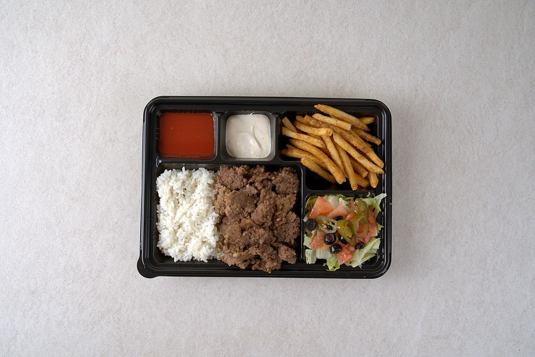

단체주문

유학생 모임 · 학과 행사 · 모스크 · 회사 점심까지. 할랄인증 사용한 소고기와 닭고기라 여럿이 드시는 자리에서 따로 챙길 사람이 없습니다.
경상국립대학교 행사에 세 번 납품했습니다 — 단과대학 행사 1회 · 외국인 유학생 단체 행사 2회.
- 진주시는 14만 원부터 · 배달비 없이 갖다 드립니다.
- 다른 지역은 주문 화면에서 지역을 고르면 최소 금액과 배달비가 나옵니다.
- 주문은 배달 이틀 전 오후 6시에 마감합니다.
지금까지 단체 납품 · 8회
| 납품일 | 주문 금액 |
|---|---|
| 2026. 8. 7. | 98,000원 |
| 2026. 8. 7. | 78,300원 |
| 2026. 7. 16. | 81,300원 |
| 2026. 7. 9. | 83,800원 |
| 2026. 6. 19. | 156,600원 |
| 2026. 5. 28. | 654,000원 |
| 2026. 5. 11. | 81,400원 |
| 2026. 3. 29. | 111,000원 |
매장 결제 기록에서 사장님이 단체 납품으로 확인한 주문입니다. 단체 이름은 싣지 않습니다.
전화로 먼저 물어보셔도 됩니다.
단체주문 후기
단체주문 앱으로 배달을 받으신 손님이 직접 남긴 후기입니다. 이름과 단체 이름은 싣지 않습니다.
아직 올라온 후기가 없습니다. 첫 후기를 기다리고 있습니다.
후기는 단체주문을 받으신 분만 쓸 수 있습니다. 주문 앱에서 배달이 끝난 주문을 열면 「후기 쓰기」 칸이 나옵니다. 회원으로 주문하셨다면 메뉴 금액의 1%를 포인트로 드립니다.